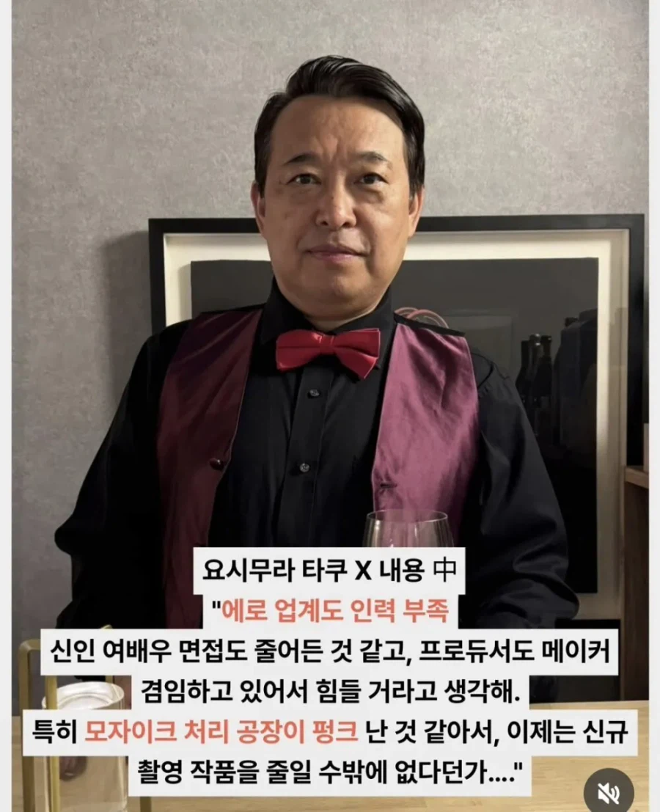
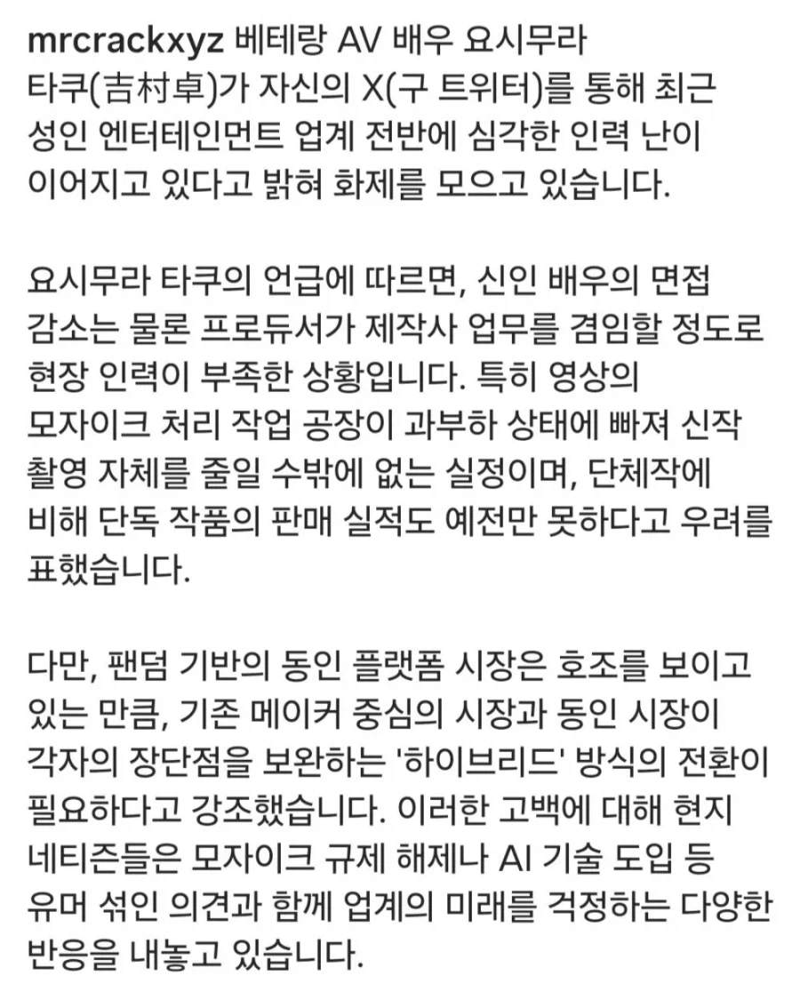

신인 여배우 부족
현장 스텝 부족
모자이크 처리반 부족으로
노모 작품 발매 여론이 점점 커지고 있는 상황
온팬에서 얼굴 공개 안하고 안 박고 몸매만 공개해도 돈이 들어오는데
범죄천국 AV 시장으로 갈리가 없지


신인 여배우 부족
현장 스텝 부족
모자이크 처리반 부족으로
노모 작품 발매 여론이 점점 커지고 있는 상황
온팬에서 얼굴 공개 안하고 안 박고 몸매만 공개해도 돈이 들어오는데
범죄천국 AV 시장으로 갈리가 없지
일반 av회사랑 뭐가 다른거임? 잘몰라서
개인이 촬영한 영상 ㅇㅇ 야동계의 유튜브같은거
거유 키워드 추천좀
fc2나 빨리 찍어라 제발
ㄹㅇ 온팬하면 몇백억도 받는데 미쳤다고 천만원 받고 못생긴 남자랑 섹스하면서 보지 다벌리면서 av 찍냐
요즘 ai 야동이 늘어나는 추세더만.. 이제 실제 배우없이 ai야동으로 해결할듯..
특히 배달부들 끌고 와서 바로 침대에 M자로 벌리는 시리즈들이 많더만.. ai 야동도 틱톡쇼츠마냥 유행타더라.
그냥 아예 ai로 새로 만드니깐 진짜 틀포티들은 구분도 못하겠더라.
그런거 보니..
그거랑 얼굴만 ai로 바꾼것도 인기있더라
아무래도 쌩 ai로 만든건 좀 어색한데 얼굴만 바꾼건 자연스럽고 배우도 얼굴노출 안하니 더더욱 좋지
그거 딥페이크로 ㅈ되는거 아니었어?
ㄴㄴ 제작사에서 자체적으로 얼굴만 바꾸는거
특정인물이 아니라 그냥 다른 얼굴
휴지끈이 짧았네 내가 근데 일본만 하는거 아니었어?
어디서보죠? 급합니다
알박은 애들만 돈주고
뉴비 남자 급여는 없습니다
이러는데 누가 가냐고
돈도 잘벌고 더 자유로운곳이 많으니까 뭐
기성 들어가면 남배우들 추남인것도 한 몫 할듯ㅋㅋㅋㅋ
모자이크 처리반은 AI 쓰면 업무 효율 늘어날거 같은데
ai제거반도 출동
서양 av는 온팬땜에 몇년전부터 좆망
배우 은퇴하는 사람들 대부분이 온팬 이런걸로 돈 잘 벌고 있더라
배우가 영상을 찍을 필요가 없는 세상이 되고 있긴 해
못생기고 늙은 남배우좀 안보고싶음 더러워죽겠어
요즘 일본은 마팬으로 돈많이 벌긴함
아니 모자이크는 ai로 딸깍하고도 남았겠구만
뭔 말도 안되는 핑계질이래 ㅋㅋㅋㅋ
그냥 플랫폼이 온팬기반으로 바뀌니
중간에서 갈취당하기 싫어서 av로
진출을 하지 않는 것 뿐이지
노모 추친한다는데 눈치없게 지적질하고 있냐?
av업계가 입법기관에 영향을 미칠 확률이 0이기 때문이지
그리고 av만 삽입이 허용되는 순간 일본 풍속업계 전체가 뒤집어질 일이 벌어짐
av 삽입 허용하면 풍속업계도 삽입 허용하라고 대반발 일어남 근데 이게 공중보건 영역이라 절대 안바뀔거거덩
모자이크는 다 사람이 찍는거였고, 일본 특성상 안바꾸고 사람이 찍고 있을꺼야. 신 기술이 나온다고 빨리 바꾸지 않음 일본은
사람이 하는건 알고있지
근데 인건비가 만만찮아서 금방 바뀔듯
요즘은 AV업체들을 온팬 발사대처럼 쓰는 경향이 있다던데....말이 온팬이지 거기도 레드 오션이라 한번 빵 뜨는게 중요한데 AV만큼 파급력 큰게 없어서.
개인이 포텐셜만 있으면 빻은 남자 배우랑 안하고도 돈 쓸어담을수 있는데 그걸 왜함
심지어 맘에드는 사람이랑 골라서 섹스하면 거기서 수십 수백배는 펌핑되는데 AV를 찍을 이유가 없음
마팬은 얼굴까지 모자이크해서 너무 별로얌
안타깝다 ㅠㅠ
<1티어 얼몸챔 모음>
아이자와 루루
유이나 에마
카스미 하루카
카스미 유이
미카미 유아
타카하시 쇼코
아카리 쿄코
사쿠야 유야
미우라 사쿠라
사츠키 메이
아리마 미쿠
유즈키 리아
아사다 히마리
토키타 아미
와타누키 코요미
타카세 리나
카시와기 코나츠
유키 리노
산노키 칸나
미야치 리오
나가하마 미츠리
시도 루이
시시도 리호
시타라 유히
사쿠라 유노
마시로 사나
나카죠 아야나
우카와 루루
오쿠이 치하루
코마츠 소라
오가사와라 나노
하야사카 카논
이노우에 모모
호시조라 네루
보통 저러면 관행으로 주던 낮은 보수 문제임
요즘 모자이크 파괴기술 진짜 말이 안되더라. 솔직히 이질감이 있어서 모파한거는 안보는데 한번씩 얼마나 발전했는지 궁금해서 가장 최신작으로 확인만함. 근데 진짜 시간이 갈수록 이질감 떨어지는 속도가 말이 안됨.
당장 내년말까지 모자이크 이질감 다 없애고 옛날작품이면 화질개선까지할 수 있을정도라 모자이크 관련 법 개정이 없어져야하긴할거임.
애초에 삽입하면 안 되는 거 눈 가리고 아웅하는 건데. 노모로 가려면 창녀촌도 다 합법화 시켜야 하는 범위라서 힘들 듯?
그게 모자이크를 지우는 게 아니라 모자이크가 있어야 할 부분에 새롭게 그림을 그려넣는거라 자연스러운 거라고 함.
모자이크 작품 팔면서, 빠칭코에서 경품 교환 옆집에서 시키듯이 옆집에 딸깍 모자이크 제거기를 파는거임
Fc2 잘돼있더라 ㄹㅇ루다가